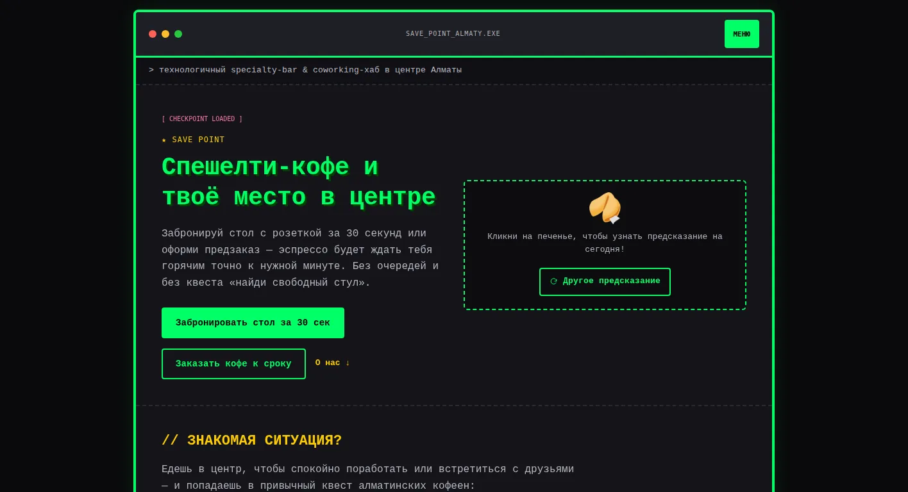

Бронь стола за 30 секунд — эспрессо готов к приходу
О проекте и решении
Лендинг спешелти-кофейни и laptop-friendly пространства в центре Алматы для фрилансеров, стартаперов и тех, кто назначает встречи в центре. Их главная боль — кружить по залу в поисках свободного стола с розеткой и ловить косые взгляды персонала из-за ноутбука. Задача — перенести выбор места и заказ в онлайн и привести к брони стола или предзаказу напитка.
Моя роль
Исследование, структура, тексты, дизайн и разработка.
Что сделано
- UX-структура «знакомая ситуация → решение»: четыре боли алматинских кофеен — полная посадка, охота за розеткой, «с ноутбуком нельзя», хаос с бронью — и таблица «что у нас есть → что это даёт тебе».
- Интерактивная карта зала: три зоны (у окна, для встреч, тихий угол), статусы «свободен / скоро освободится / занят» и выбор стола в один клик.
- Онлайн-предзаказ: меню по категориям, корзина с допами и итоговой суммой — напиток готов к точной минуте прихода.
- Брони и заказы уходят в Telegram-бот кофейни через серверную функцию Cloudflare: валидация полей, защита от спама и ограничение частоты заявок.
- Триггеры конверсии: welcome-промокод −20%, индикатор загрузки зала в часы пик и отдельный сценарий брони ивент-зоны на 8–12 человек.
- Стиль ретро-терминала: неоновый зелёный на тёмном фоне, пиксельный шрифт, собственный пиксельный курсор и печенье с предсказаниями в первом экране.